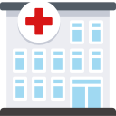

El temizliğine dikkat edilmelidir. Eller en az 20 saniye boyunca sabun ve suyla yıkanmalı, sabun ve suyun olmadığı durumlarda alkol bazlı el antiseptiği kullanılmalıdır. Antiseptik veya antibakteriyel içeren sabun kullanmaya gerek yoktur, normal sabun yeterlidir.
Eller yıkanmadan ağız, burun ve gözlerle temas edilmemelidir.
Hasta insanlarla temastan kaçınmalıdır (mümkün ise en az 1 m uzakta bulunulmalı).
Özellikle hasta insanlarla veya çevreleriyle doğrudan temas ettikten sonra eller sık sık temizlenmelidir

Hastaların yoğun olarak bulunması nedeniyle mümkün ise sağlık merkezlerine gidilmemeli, sağlık kuruluşuna gidilmesi gereken durumlarda diğer hastalarla temas en aza indirilmelidir.
Öksürme veya hapşırma sırasında burun ve ağız tek kullanımlık kağıt mendil ile örtülmeli, kağıt mendilin bulunmadığı durumlarda ise dirsek içi kullanılmalı, mümkünse kalabalık yerlere girilmemeli, eğer girmek zorunda kalınıyorsa ağız ve burun kapatılmalı, tıbbi maske kullanılmalıdır.

Çiğ veya az pişmiş hayvan ürünleri yemekten kaçınılmalıdır. İyi pişmiş yiyecekler tercih edilmelidir.

Çiftlikler, canlı hayvan pazarları ve hayvanların kesilebileceği alanlar gibi genel enfeksiyonlar açısından yüksek riskli alanlardan kaçınılmalıdır.
Seyahat sonrası 14 gün içinde herhangi bir solunum yolu semptomu olursa maske takılarak en yakın sağlık kuruluşuna başvurulmalı, doktora seyahat öyküsü hakkında bilgi verilmelidir.